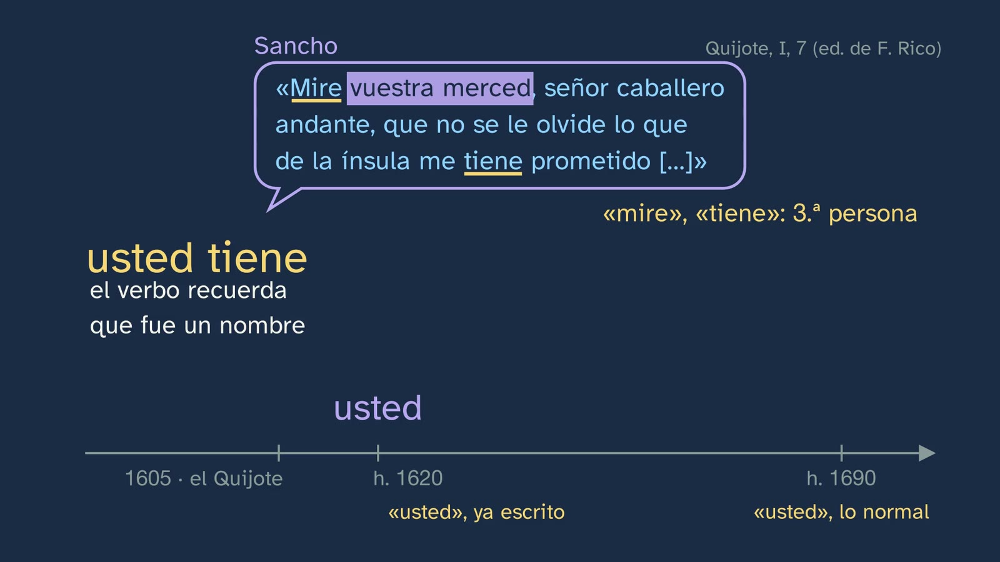
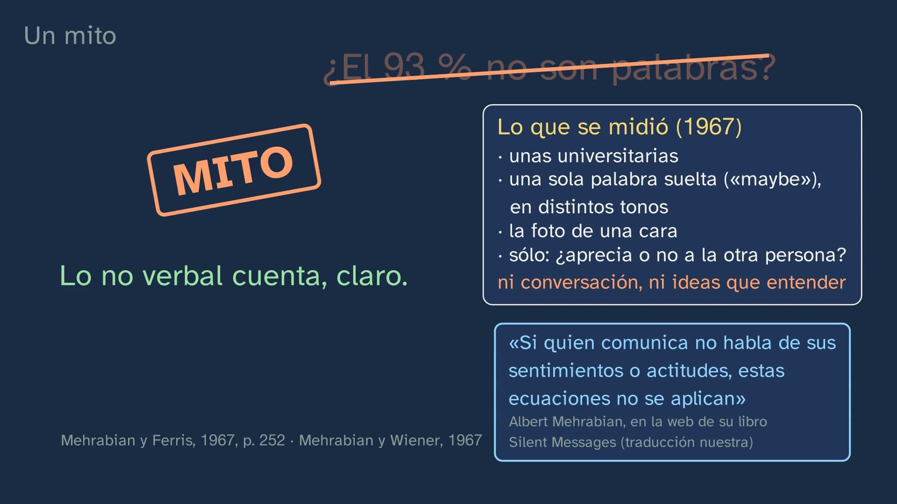
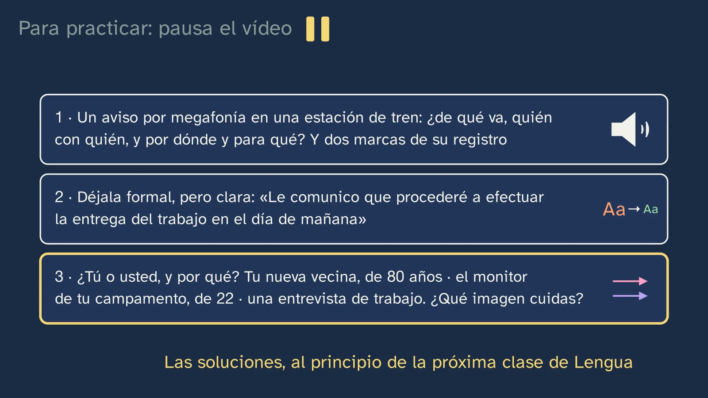

Tú, usted y el registro
En pocas palabras
La clase parte de algo que cualquier alumno ha hecho: mañana no va a clase y escribe dos mensajes, uno al grupo de amigos («Chicos, mañana no voy, tengo médico. ¿Qué hay para el jueves?») y otro a su profesora («Buenos días, Marta: mañana no podré ir a clase, porque tengo cita en el médico. ¿Podría decirme qué hay que preparar para el jueves? Gracias. Un saludo, Lucía»). Los dos están bien. Cambiados de sitio, los dos fallan. Entonces, ¿qué es hablar bien? La respuesta tiene nombre, la adecuación: hablar correcto hace falta, pero no basta; hay que acertar con la situación. El recorrido, en cinco pasos:
- Tú o usted, la marca que más se nota. Por qué decimos «usted tiene» y no «usted tienes»: «usted» viene de «vuestra merced», un grupo nominal cuyo núcleo, merced, es un sustantivo, como majestad en «su majestad está cansada» (DPD, «usted», § 2; NGLE § 16.1b). Con el Quijote de 1605 («Mire vuestra merced…» / «Has de saber, amigo Sancho Panza…»), la palabra que se gasta hasta «usted» (hacia 1620 y 1690) y el «vos» que se gastó antes.
- Poder y solidaridad. El trato de una sola dirección y el de los dos igual (Brown y Gilman, 1960). Cómo ha cambiado en España, con la gramática de las Academias y con los propios hablantes del COSER: 18 de 19 personas mayores de pueblos trataban de usted a sus padres (recuento nuestro); un señor de Constantina cuenta tres generaciones en un minuto; la asimetría que queda con la edad (55 de 76 entrevistas); una señora de Errigoiti que pide el tú y a la que se lo vuelven a quitar en la frase siguiente. Y qué imagen de la clase 4 cuida cada uno.
- El registro, en tres preguntas. Campo, tenor y modo (Halliday y Hasan, 1985), con los componentes del hecho comunicativo del decreto repartidos entre ellos; la mesa de mezclas, que mueve una sola cosa cada vez, y las marcas del registro: tratamiento, léxico, sintaxis y lo no verbal. Y una mujer real de Jaén que cambia de trato con tres personas en la misma conversación.
- Lo que no son palabras. En un chat no hay cara, y el emoji hace parte de su trabajo: el mismo «Vale», con una sonrisa o con los ojos en blanco (Dresner y Herring, 2010; Yus, 2014); y el mito del 93 %, desmontado con lo que midió de verdad su autor.
- Formal no es difícil. El error típico, con Juan de Mairena («Lo que pasa en la calle»), el 82 % que veía el lenguaje jurídico excesivamente complicado, «El Congreso aprobó» y el derecho a un lenguaje claro en la justicia (LO 5/2024, art. 9).
Qué aporta que no traen los libros ni los vídeos. En la revisión de referentes de la clase (42 vídeos de YouTube, 03/11/2026), nadie explica la tercera persona del usted con «su majestad» (sólo la descomponen tres canales pequeños, sin decirlo en una frase), nadie usa el Quijote para el trato, nadie dibuja el poder y la solidaridad y nadie separa el campo del tenor: en español se toma el campo por el lugar, o se dice que el tema decide la formalidad, que es la raíz de «formal = difícil». Lo más visto en español sobre «hablar bien» defiende lo contrario de esta clase: que lo formal «siempre» luce más y que tus palabras «indican tu intelecto» (Kelvin Siso, 2,75 millones de vistas, 5:12 y 6:45). El 93 % sólo lo desmonta bien un vídeo en inglés. En el contraste con dieciséis proyectos editoriales de 1.º de Bachillerato (29 y 30/09/2026, sólo para comparar), ninguno usa los corpus de la RAE ni hace el ciclo completo de la competencia 9, y en alguno circula el mito de Mehrabian. Esta clase enseña el porqué del usted con sus fuentes, el cambio entre generaciones con testimonios reales de un corpus abierto, y dice en cada dato qué es medida, qué es recuento nuestro y qué es una pista.
Objetivo. Al terminar, el alumnado sabrá describir la situación de un texto (formalidad, carácter público o privado, distancia, propósito, canal y elementos no verbales), reconocer las marcas de su registro y explicar por qué formal no es lo mismo que rebuscado.
Currículo
Real Decreto 243/2022, Lengua Castellana y Literatura I, materia común de 1.º de Bachillerato (texto consolidado del BOE, comprobado para el tema el 29 y el 30/09/2026 y para esta clase el 03/11/2026: su última actualización, del 02/07/2026, sólo toca el artículo 23.4, no el anexo de Lengua).
| Elemento | Qué dice el decreto | Dónde se trabaja |
|---|---|---|
| Saber básico (bloque B, «Comunicación», 1. Contexto) | «Componentes del hecho comunicativo: grado de formalidad de la situación y carácter público o privado; distancia social entre los interlocutores; propósitos comunicativos e interpretación de intenciones; canal de comunicación y elementos no verbales de la comunicación.» | Los seis, repartidos entre el tenor y el modo (9:39). La formalidad y la distancia, en el gancho (1:59) y en la mesa de mezclas (10:11); el canal y lo no verbal, en el modo (11:06) y en «Lo que no son palabras» (12:22), con el emoji como lo no verbal del chat (12:52). Lo público o privado y el propósito sólo se nombran (9:54 y 10:05): el ejercicio 1, el aviso por megafonía, los pone a trabajar. La interpretación de intenciones, en los mensajes cambiados de sitio («suena a broma, o a enfado», 2:39) |
| Saber básico (bloque B, 2. Géneros discursivos) | «Propiedades textuales: coherencia, cohesión y adecuación.» | La adecuación, con su nombre, es la respuesta a la pregunta de la clase (16:07). La coherencia, en la clase 6; la cohesión, en el tema 7 |
| Saber básico (bloque B, 4. Reconocimiento y uso discursivo de los elementos lingüísticos) | «Recursos lingüísticos para adecuar el registro a la situación de comunicación.» | Las marcas del registro (10:32–11:06): el tratamiento, el léxico, la sintaxis y lo no verbal; la reescritura del ejercicio 2 y la elección de tú o usted del ejercicio 3 |
| Saber básico (bloque D, «Reflexión sobre la lengua») | «Elaboración de conclusiones propias sobre el funcionamiento del sistema lingüístico con un metalenguaje específico a partir de la observación, comparación y clasificación de unidades comunicativas y del contraste entre lenguas […]» | El porqué de la concordancia de «usted» (3:29–4:48), con la persona gramatical frente a la persona del discurso; las conclusiones sacadas de un corpus, con lo que no se puede concluir (6:02–8:00). Y la actividad de esta ficha |
| Competencia específica 3 | «Producir textos orales y multimodales, con atención preferente a textos de carácter académico, con rigor, fluidez, coherencia, cohesión y el registro adecuado, atendiendo a las convenciones propias de los diferentes géneros discursivos, y participar en interacciones orales con actitud cooperativa y respetuosa, tanto para construir conocimiento y establecer vínculos personales, como para intervenir de manera activa e informada en diferentes contextos sociales.» | Su descripción pide que en Bachillerato «se prestará especial atención a situaciones de carácter público, con mayor distancia social entre los interlocutores, que exigen usos lingüísticos más elaborados, registros formales y un control consciente de cuanto tiene que ver con la comunicación no verbal». En el vídeo, sólo en análisis: el aviso dicho en el pasillo (11:06), lo no verbal (12:22–13:56) y el aviso por megafonía del ejercicio 1, la situación más pública y distante de la clase |
| Competencia específica 5 | «Producir textos escritos y multimodales coherentes, cohesionados, adecuados y correctos, con especial atención a los géneros discursivos del ámbito académico, para construir conocimiento y dar respuesta de manera informada, eficaz y creativa a demandas comunicativas concretas.» | «Adecuados y correctos», las dos cosas: por eso la clase dice que hablar correcto hace falta, pero no basta (16:00). Su descripción pide «mantener una adecuada claridad expositiva»: formal no es difícil (14:00–15:50) y el ejercicio 2 |
| Competencia específica 9 | «Consolidar y profundizar en el conocimiento explícito y sistemático sobre la estructura de la lengua y sus usos, y reflexionar de manera autónoma sobre las elecciones lingüísticas y discursivas, con la terminología adecuada, para desarrollar la conciencia lingüística, para aumentar el repertorio comunicativo y para mejorar las destrezas tanto de producción oral y escrita como de comprensión e interpretación crítica.» | Su descripción pide trabajar «a través de procesos de indagación», con «la formulación de hipótesis y de reglas, el uso de contraejemplos». Aquí, la terminología (campo, tenor, modo, registro, adecuación, persona gramatical), las predicciones antes de los datos (6:19 y 10:25) y la actividad |
| Criterio 5.1 | «Elaborar textos académicos coherentes, cohesionados y con el registro adecuado sobre temas curriculares o de interés social y cultural, precedidos de un proceso de planificación que atienda a la situación comunicativa, destinatario, propósito y canal y de redacción y revisión de borradores de manera individual o entre iguales, o mediante otros instrumentos de consulta.» | La mesa de mezclas es esa planificación hecha a la vista: el mismo aviso para otro destinatario (10:11), por otro canal (11:06) o de otro tema (11:30). El ejercicio 2 es una revisión de borrador. Escribir un texto académico entero, en la clase 7 |
| Criterio 9.2 | «Explicar y argumentar la interrelación entre el propósito comunicativo y las elecciones lingüísticas del emisor, así como sus efectos en el receptor, utilizando el conocimiento explícito de la lengua y un metalenguaje específico.» | Toda la clase: el efecto de cada mensaje en el sitio equivocado (2:35), el usted de broma y el tú que nadie ha ofrecido (8:21), qué imagen cuida cada tratamiento (8:04) y el ejercicio 3 |
| Criterio 9.3 (sólo en la actividad) | «Elaborar y presentar los resultados de pequeños proyectos de investigación sobre aspectos relevantes del funcionamiento de la lengua, formulando hipótesis y estableciendo generalizaciones, utilizando los conceptos y la terminología lingüística adecuada y consultando de manera autónoma diccionarios, manuales y gramáticas.» | El vídeo no lo declara. Lo trabaja la actividad de esta ficha: hipótesis, datos del COSER o de la familia, recuento y lo que no se puede concluir |
Lo que hay que traer. De la clase 3, el usted de las entrevistas de ESLORA (las entrevistadoras pedían «cuénteme» a los mayores y «cuéntame» a los jóvenes), las tres pesas de Brown y Levinson (la distancia, el poder y lo que se pide) y su promesa: «del tú y el usted hablaremos en su propia clase». De la clase 4, las dos imágenes: la negativa, que no te impongan, y la positiva, que te aprecien; y que pasarse también comunica. De la ESO, los mismos saberes: en 1.º y 2.º, y otra vez en 3.º y 4.º, los «Componentes del hecho comunicativo», las «Propiedades textuales: coherencia, cohesión y adecuación» y los «Recursos lingüísticos para adecuar el registro a la situación de comunicación»; y en 3.º y 4.º, la «Identificación y uso de las variaciones de las formas deícticas (fórmulas de confianza y cortesía) en relación con las situaciones de comunicación» (Real Decreto 217/2022, Lengua Castellana y Literatura, bloque B). Y, de la gramática, las tres personas del verbo.
Dónde vuelve. La clase 6, «¿Dónde está el sentido de un texto?», trabaja la coherencia, la otra propiedad del saber B.2. La clase 7, el segundo laboratorio del tema, pide escribir un texto pensando en quien lo va a leer: el criterio 5.1 entero. El voseo y el «ustedes» de Canarias, de Andalucía occidental y de América, que esta clase deja fuera, van en el tema 20 del plan, «El español y sus hablantes: variedades y prejuicios» (clase «El español de aquí y de allí»).
Cómo está construida la clase
Capítulos del vídeo
Unos dieciocho minutos, en once capítulos. Es una clase de teoría, con Vera, sin bata, a su mesa, pero sus datos son reales: cuatro entrevistas del COSER (pueblos de Sevilla, Vizcaya, Jaén y León) y dos fragmentos de ESLORA (Galicia), de los que sólo se ve el texto; no suena ninguna voz. Los mensajes del gancho y de la mesa de mezclas son inventados, y la pizarra lo dice. Los colores siguen los de la clase 4: lavanda para el usted, rosa para el tú; la burbuja discontinua (la imagen negativa) y el termómetro (la positiva) vuelven con el mismo significado.
| Capítulo (minuto) | Qué hace | Base formativa |
|---|---|---|
| Qué vamos a ver (0:00) | Vera saluda; el mapa del tema, con la cuarta clase un momento y la quinta resaltada (0:07) | Saber dónde se está (aprendizaje multimedia: señalización) |
| Lo que ya sabes (0:17) | En las entrevistas de la clase 3, ¿con quiénes usaban el usted? (0:28; silencio corto, sin contador). Un punto por cada «cuéntame», en lavanda los de usted: 0 de 26 entre los jóvenes, 8 de 15 y 17 de 24 (0:32), y la promesa de aquella clase | Recuperar (Roediger y Karpicke, 2006), con la pregunta a la vista |
| Las soluciones (0:54) | Los tres ejercicios de la clase 4, cada uno con su enunciado en gris: las imágenes que amenaza cada frase (0:54), «cierra la ventana» por los cinco caminos (1:20) y el plan al que no puedes ir (1:39) | Espaciar; las soluciones, cortas y con su enunciado |
| La pregunta (1:59) | El gancho: los dos mensajes, tecleados en dos móviles. Los dos están bien (2:30); cambiados de sitio, fallan (2:35). Vera, a cámara (2:53): «Entonces, si los dos estaban bien, ¿qué es hablar bien?», y la pregunta, sola y en grande (2:57) | El gancho, con su contexto |
| Tú o usted (2:57) | «¿Podría decirme…?» frente a «¿Podrías…?», y el tú en las aulas de España y de América (3:11). Para y piensa: «usted tiene», no «usted tienes» (3:29; contador en 3:48). El Quijote, con el grabado de Doré (3:53); «vuestra merced» es un nombre, como «majestad» (4:11), y la palabra que se gasta letra a letra en su sitio, sobre una línea que marca 1605 (el Quijote), hacia 1620 y hacia 1690 (4:27). El «vos», que se gastó antes (4:51) | El problema antes que la explicación; ¿cómo lo sabemos?, con el texto de 1605 |
| Poder y confianza (5:12) | Las dos figuras a dos alturas: el trato del poder (5:12) y el de la solidaridad, con el deslizador de 1860 a 1960 (5:38). Predicción (6:19; contador en 6:22) y las diecinueve voces del COSER (6:27), con la gramática de las Academias; el señor de Constantina y su árbol de tres generaciones (6:48); la rejilla de 76 entrevistas (7:11); Errigoiti (7:35). Qué imagen cuida cada uno (8:04) y cómo fallan los dos (8:21). Vera, a mitad (8:43) | Predecir antes de ver (White y Gunstone, 1992); ¿cómo lo sabemos?, con datos de corpus y su límite dicho |
| El registro, en tres preguntas (8:50) | Campo, tenor y modo, y qué es el registro (9:18–9:39); sus piezas, con los componentes del decreto (9:39). La mesa de mezclas: el tenor, con predicción (10:11; contador en 10:27) y las marcas del registro (10:32); el modo (11:06); el campo (11:30). Una mujer de Jaén, tres registros en la misma conversación (11:47) | Primero la intuición, después lo exacto; un cambio cada vez (segmentación) |
| Lo que no son palabras (12:22) | En un chat no hay voz ni cara: el mismo «Vale», con una sonrisa o con los ojos en blanco (contador en 12:34); en persona lo diría la cara, y en el chat lo dice el emoji, que dice cómo hay que tomar el mensaje (12:47–12:56); el mito del 93 % (13:07), con la tarta que se agrieta (13:47) | Comparar en paralelo (en el chat y en persona); ¿cómo lo sabemos?; el mito, desmontado con la fuente original |
| Formal no es difícil (14:00) | El error típico, tachado; Mairena en la pizarra, con contador (14:28) y su solución (14:33); el 82 % y «El Congreso aprobó» (14:53); la ley de 2024 (15:18); qué es formal, y que lo coloquial no es incorrecto (15:31) | El error, a la vista, desmontado razonando (Muller y otros, 2008) |
| ¿Qué es hablar bien? (15:54) | La respuesta a la pregunta: no es hablar difícil ni siempre igual; corrección y adecuación (15:54). Los dos mensajes del gancho se cruzan otra vez y fallan: el mismo campo, otro tenor. El resumen, avisando de que se repite (16:17) | Cerrar el gancho; espaciar |
| Para practicar y seguir pensando (16:50) | Los tres ejercicios (16:50); la pregunta abierta, con dos voces reales (17:34; contador en 18:03); la próxima clase (18:08); la despedida (18:13) | Recuperar; la pregunta abierta (artículo 9 de la Constitución del canal) |


Plan de una sesión de 50 minutos
| Minutos | Qué se hace |
|---|---|
| 0–4 | Sin vídeo, «Antes de empezar» en la hoja: ¿tú o usted con seis personas? A mano alzada, cuántos tratarían de usted al señor de setenta años y cuántos a la profesora de Lengua: se apunta en la pizarra y no se comenta. |
| 4–8 | Vídeo de 0:00 a 2:58. En 0:28 basta el silencio del vídeo. En 2:58, con la pregunta en grande, parar: cada cual escribe en una línea qué es hablar bien (pregunta 2 de la hoja) y lo guarda para el final. |
| 8–13 | Vídeo de 2:58 a 6:27. En 3:45 basta el contador del vídeo (pregunta 3). Parar en 6:22: a mano alzada, ¿cuántas de las diecinueve personas crees que trataban de usted a sus padres? (pregunta 5). Seguir. |
| 13–17 | Vídeo de 6:27 a 8:50. Tras la toma de Vera, un minuto para las preguntas 6 y 7 de la hoja. |
| 17–23 | Vídeo de 8:50 a 12:22. Parar en 10:26: en parejas, dos cosas que cambian en el mensaje si va a la profesora (pregunta 8). Seguir; después, cada pareja coloca sus dos cambios en una de las cuatro marcas. |
| 23–29 | Vídeo de 12:22 al final (18:26). En 14:28 y en 18:03 basta el contador. Los ejercicios, para casa: sus soluciones abren la clase 6. |
| 29–44 | La actividad: el usted a los padres, en los datos (abajo). |
| 44–50 | La pregunta abierta, en debate (pistas en «Para seguir pensando»), y vuelta a la línea del minuto 2:58: ¿la cambiaría alguien? Y a la tabla del principio: ¿qué pesó más en cada elección, la edad, el cargo o la confianza? |
Errores típicos y cómo se tratan
Con una advertencia honesta, como en las clases 3 y 4: ninguno de estos errores está medido con alumnado español de Bachillerato. El primero es el que la ficha del tema prevé para esta clase (su error 4); los demás circulan en vídeos con millones de vistas o son previsibles por lo que la clase enseña, y se dice de dónde sale cada uno.
- «Formal es usar palabras difíciles». Lo dicen clases de Lengua con vistas: «el registro culto utiliza palabras y oraciones complejas… cuesta comprenderlo y recomiendo que en caso de dudas recurran a un diccionario» (Profe en c@sa, 190 mil vistas, 2:18–2:48), y la BBC Learning English reescribe un correo formal metiendo palabras latinas y estructuras complejas (1:28 y 2:50). Lo que hay en contra viene del mundo real: según los barómetros del CGPJ, un 82 % de los ciudadanos considera «que el lenguaje jurídico es excesivamente complicado y difícil de entender» (Informe de la Comisión de modernización del lenguaje jurídico, 2011, p. 2), y el mismo informe pide frases breves, porque los textos jurídicos «se prolongan de forma innecesaria mediante el empleo de incisos y perífrasis, de expresiones redundantes, de locuciones que nada aportan» (p. 8). La clase lo plantea en 14:00 y lo desmonta con Mairena (14:33), «El Congreso aprobó» (15:09) y la LO 5/2024 (15:18), que pide lenguaje claro «sin perjuicio de la necesidad de utilizar el lenguaje técnico-jurídico para garantizar la precisión» (art. 9.2): el tecnicismo necesario no es rebuscado. Ojo con el error contrario, «nunca uses palabras largas» (Derek Halpern: «stop using them now», 2:15): lo que sobra es la complicación sin necesidad.
- «Lo coloquial es incorrecto», o «hablar bien es hablar formal». Lo dicen vídeos muy vistos: «utilizar un lenguaje coloquial o vulgar no es… nada elegante» (Teresa Baró, 3,19 millones, 1:04), y otros confunden el registro con el nivel de instrucción de quien habla (Aprueba con Nota Alta, 2:35). El Centro Virtual Cervantes recuerda que los registros «no constituyen entidades discretas, con fronteras claras, sino que se dan en un continuum» («Registro», Diccionario de términos clave de ELE), y el decreto pide distinguir los registros de los dialectos y los sociolectos «a fin de combatir de manera argumentada prejuicios y estereotipos lingüísticos» (introducción de la materia). La clase lo dice en 15:45: «lo coloquial no es incorrecto: es lo adecuado entre amigos». Y el error de vuelta: si todo depende de la situación, la corrección da igual. No: la competencia 5 pide textos «adecuados y correctos», y la clase lo dice antes de nombrar la adecuación (16:00). En el COSER hay hablantes que dicen de sí mismas que hablan «muy malamente» o «mu basto» (La Atalaya, Málaga, COSER-3002-02, p. 26; Liétor, Albacete, COSER-0214-01, p. 34): si se llevan al aula, que sea para discutir esa creencia, no para darla por buena.
- «El usted ya no se usa», o, al revés, «tutear es siempre una falta». Las dos cosas son falsas como descripción. La gramática de las Academias dice que «el trato de usted dirigido a los desconocidos adultos sigue siendo, con escasas excepciones, la norma común en el español general contemporáneo» (NGLE, § 16.15h), y también que el tú es hoy el trato normal entre parientes, compañeros y colegas, y «entre jóvenes, incluso si no se conocen» (§ 16.15i), y que puede resultar ofensivo con «un profesor que no haya dado su beneplácito» (§ 16.15j). La clase lo enseña en 3:11 (el tú en las aulas) y en 8:21 (los dos pueden fallar). Lo que no tiene respuesta de libro es si el respeto está en el tratamiento: es la pregunta abierta (17:34), y el profesor no la cierra.
- «"Usted" es de tercera persona porque habla de otro». Al revés: habla de quien está delante. El DPD lo dice así: «Aunque su referente es siempre una segunda persona, pues designa al interlocutor a quien se habla, gramaticalmente es un pronombre de tercera, pues procede, etimológicamente, de la contracción del sintagma nominal vuestra merced» («usted», § 2). Es la diferencia entre la persona del discurso y la persona gramatical. La clase la dibuja en 3:29, con una flecha de «usted» a la persona de delante y otra, la del verbo, a la tercera, y la resuelve en 4:11. El ejemplo de la NGLE para el aula: «Señor, ¿quiere vuestra merced darme licencia que departa un poco con él?» (Quijote, I, citado en § 16.1h), donde él es la persona a quien se habla.
- «El tema decide lo formal que se habla», o «el campo es el lugar». En YouTube, «tendremos que ser más [formales] si hablamos de mecánica cuántica que si hablamos… de fútbol» (Quique Castillo, 5:57) y «el campo es dónde podemos encontrar este enunciado» (Profe Eber, 1:25). Para Halliday y Hasan, el campo es «what is happening, to the nature of the social action that is taking place», y la relación entre los participantes es el tenor (1985, p. 12). La clase los separa en la mesa de mezclas: con el mismo trato y el mismo canal, otro tema sólo trae otras palabras (11:30). Se puede hablar de logaritmos con los amigos, y de fútbol en una rueda de prensa.
- «El 93 % de lo que comunicamos no son palabras» (o el 55 %, «el lenguaje corporal»). Sale de dos experimentos de 1967 con palabras sueltas: en Mehrabian y Ferris participaron 62 universitarias en total, y la prueba que combina voz y cara la hicieron 20 (p. 250); la regla 7-38-55 es una suma «sugerida» de los dos estudios («It is suggested that the combined effect… is a weighted sum of their independent effects— with the coefficients of .07, .38, and .55», p. 252). El propio Mehrabian: «Unless a communicator is talking about their feelings or attitudes, these equations are not applicable» (kaaj.com). En el experimento no había cuerpo: había fotos de caras. La clase lo desmonta en 13:18 con una prueba de sentido común (si fuera verdad, entenderías casi entera una película en un idioma que no conoces), con lo que se midió y lo que no (ni conversación ni ideas que entender) y con esa aclaración del autor en pantalla, traducida. En el contraste editorial del tema apareció en un libro con otra cifra, «el 60 % de lo que decimos es lenguaje corporal»: es el mismo mito.
- «Los emojis son adorno», o «sólo expresan emociones». Muchos dicen, sobre todo, cómo hay que tomar lo que se dice. Para Dresner y Herring (2010), un guiño indica que un mensaje «should not be taken as a request or a demand», y Yus (2014) les cuenta ocho funciones, entre ellas reforzar o suavizar lo que se dice y marcar la broma o la ironía: «Emoticons are not redundant or irrelevant». La clase lo dice en 12:52: «el emoji hace parte de su trabajo: dice cómo hay que tomar el mensaje».
- Dos leyendas que pueden salir en clase: «"usted" viene del árabe ustad» y «el vos de respeto nació porque había dos emperadores». De la primera, De Jonge (2005, nota 3) recuerda «la falta de testimonios de la forma usted antes de 1620, más de 100 años después de la reconquista de Granada», y concluye que su influencia, «de haber existido siquiera, fuera mínima, o que quizá la semejanza de las dos formas constituya una coincidencia fortuita». La segunda es una hipótesis de Brown y Gilman, que ellos mismos presentan con «may have been» (1960, p. 255; ver «Para el profesorado»). La clase no las cuenta; si salen, son un buen ejemplo de «¿cómo lo sabemos?».
Preguntas y soluciones
Para y piensa (dentro del vídeo)
- En las entrevistas de la clase 3, ¿con quiénes usaban el usted? (0:28; silencio corto, sin contador) A las personas mayores. En el recuento de la clase 3, sobre las entrevistas de ESLORA, ningún «cuénteme» a los jóvenes de 19 a 34 años (0 de 26), 8 de 15 a los de 35 a 54 (53 %) y 17 de 24 a los de 55 o más (71 %). El vídeo contesta en 0:32, con las tres barras. Ojo al leer las barras: la clase 3 llamaba «cuéntame» a todas esas peticiones, y lo que se cuenta es cuántas iban de usted («cuénteme»).
- Entonces, si los dos estaban bien, ¿qué es hablar bien? (2:56; Vera, a cámara, y la pregunta sola en la pizarra hasta 2:59) Es la pregunta de la clase, y se contesta en 15:54: «Hablar correcto hace falta, pero no basta: hay que acertar con la situación. A eso se le llama adecuación». Si en el aula se escribe una respuesta en el minuto 2:58, al final se puede comparar: casi siempre sale «hablar sin faltas», «hablar formal» o «hablar con palabras cultas», que son el punto de partida de la clase.
- ¿Tú lo escribirías así, o con «podrías»? (3:07; de paso, sin pausa) No tiene una respuesta: depende del instituto, de la profesora y de lo que ella haya propuesto. Lo que dice la gramática: en España el tú «se ha extendido de manera considerable en todos los estadios de la enseñanza, y a menudo aparece solo restringido por ciertas variables, no siempre nítidas, relativas a la edad, al prestigio del profesor o al respeto o la autoridad que este pueda imponer»; en América es «poco frecuente» entre alumno y profesor (NGLE, § 16.15i). Y puede resultar ofensivo con «un profesor que no haya dado su beneplácito» (§ 16.15j).
- Decimos «usted tiene», no «usted tienes». ¿Por qué? (3:45; el contador, en 3:48) Porque «usted» viene de «vuestra merced», que es un grupo nominal: su núcleo, merced, es un sustantivo, y un sustantivo concuerda con el verbo en tercera persona, como majestad en «su majestad está cansada» o señoría en «su señoría ha dicho». La NGLE: «vuesa merced concuerda en tercera persona con el verbo porque su núcleo es el sustantivo merced, es decir, un nombre común. Lo mismo sucede con otras formas de tratamiento, como su excelencia, su ilustrísima, su señoría, su alteza» (§ 16.1b); y el DPD, «usted», § 2. El vídeo contesta entre 3:53 y 4:48. Valen también, como buenas hipótesis, «porque se habla al otro como si fuera otra persona, para poner distancia» o «porque viene de una fórmula como "su majestad"»: la primera describe el efecto, no la causa gramatical, y conviene reconducirla hacia el sustantivo; la segunda es casi la respuesta.
- De diecinueve personas mayores de pueblos, nacidas entre 1909 y 1947, que cuentan cómo trataban a sus padres, ¿cuántas crees que lo hacían de usted? (6:19; el contador, en 6:22) Dieciocho, con el trato de respeto: quince de usted, dos con el zu del euskera (Gabiria, Guipúzcoa) y una que dice «usted, de vos» (Queixàs, Gerona). Sólo una, de tú: un señor de Santaella (Córdoba), que explica que «aquí en Santaella no tenemos esa costumbre» (COSER-1514-01, p. 8). El vídeo contesta en 6:27. Lo que no dice: que 18 de cada 19 españoles de esa edad trataran de usted a sus padres. Son las personas que el COSER buscaba (mayores, de pueblos) y las que sacaron el tema; lo que sí respalda es la gramática de las Academias: el usted «era el trato que se daba tradicionalmente en España a los padres y ascendientes próximos de mayor edad a lo largo de los siglos xviii, xix e, incluso, de la primera mitad del xx, sobre todo en los ámbitos rurales» (NGLE, § 16.15r). Lo que importa no es acertar el número, sino haber predicho antes de ver.
- El mismo aviso, por el mismo móvil, pero a tu profesora. ¿Qué crees que cambia? (10:25; el contador, en 10:27) El vídeo contesta en 10:32. Cambia el tratamiento: el vocativo y el saludo («Chicos» pasa a «Buenos días, Marta») y la persona del verbo («¿Podría decirme…?»: entra el usted). Cambia el léxico: «tengo médico», coloquial, pasa a «tengo cita en el médico». Cambia la sintaxis: «no voy» pasa a «no podré ir a clase», y la causa, que en el mensaje al grupo iba yuxtapuesta («no voy, tengo médico»), se une con «porque» («y se une la causa», dice la voz). Llegan fórmulas de cierre que el grupo no necesita: las gracias y la firma («Un saludo, Lucía»). Y se va lo no verbal del chat: el emoji. Valen cualquier par de cambios que estén en el mensaje y se nombren con su marca. Las gracias y la firma son fórmulas de cortesía y del género (un correo o un mensaje a alguien con quien hay distancia): se pueden poner con el tratamiento, si se razona, mejor que con la sintaxis.
- «Vale», con una sonrisa, y «Vale», con los ojos en blanco: ¿dicen lo mismo? (12:32; el contador, de tres segundos, en 12:34) No. La palabra es la misma, pero la sonrisa dice que vas con ganas, y los ojos en blanco, que vas sin ganas. En persona lo diría la cara; en un chat no hay cara, y el emoji hace parte de su trabajo: dice cómo hay que tomar el mensaje (Dresner y Herring, 2010; Yus, 2014). Vale cualquier respuesta razonada que vea que la carita cambia cómo se toma el «Vale». El vídeo contesta en 12:37.
- «Vaya usted poniendo eso en lenguaje poético». ¿Qué escribirías tú? (14:26; el contador, en 14:28) El alumno de Mairena escribe «Lo que pasa en la calle», y Mairena dice «No está mal» (Machado, Juan de Mairena, 1936, cap. I). El vídeo lo da en 14:33. Valen las versiones que digan lo mismo con palabras de todos los días («lo que pasa siempre en la calle», «lo de cada día en la calle»); las que sustituyen una palabra rebuscada por otra («los sucesos habituales de la vía pública») siguen sin estar traducidas. Ojo: Mairena pide «lenguaje poético», no formal. La clase lo usa para el registro («la frase rebuscada no era más poética, ni más formal», 14:41): es una lectura nuestra, con un precedente, el prólogo de Carlos Lesmes al Libro de estilo de la Justicia (2017, p. XXV), que pone la escena como ejemplo del «ideal de sencillez del magisterio machadiano». Si un alumno intenta una versión poética de verdad (una metáfora, un verso), también vale: es lo que pedía el profesor.
- ¿Está el respeto en el tratamiento? ¿Tú qué crees? (17:58; el contador, en 18:03) Sin veredicto (artículo 9 de la Constitución del canal). Las dos posturas, con su mejor argumento, y las pistas para el debate, abajo, en «Para seguir pensando».



De la hoja del alumnado
- Antes de empezar. No hay solución: es lo que haría cada cual, con una razón. Al final, lo que dice la gramática de las Academias de casos parecidos: el usted a «los desconocidos adultos» sigue siendo «la norma común» (el señor de setenta años; NGLE, § 16.15h); el tú es el trato normal «entre parientes cercanos» y «entre jóvenes, incluso si no se conocen» (la abuela y el dependiente de veinte años; § 16.15i); con el profesorado, en España se ha extendido el tú, «restringido» a menudo por «la edad», «el prestigio del profesor» o «la autoridad que este pueda imponer» (la profesora y la directora; § 16.15i), y puede resultar ofensivo si no lo ha ofrecido (§ 16.15j); el tú a «un dependiente o a un camarero adulto al que no se conoce» también puede ofender (§ 16.15j). Del paciente al médico la NGLE no dice nada; sí que en España médicos y enfermeros tutean a menudo a sus pacientes, «en ocasiones como reflejo de cierta actitud paternalista» (§ 16.15i). Lo que no se puede concluir del recuento de la clase: cómo se trata la gente en España, ni siquiera en el barrio. Es un grupo de una edad y un sitio, dice lo que haría y no lo que hace, y la tabla le hacía elegir entre dos (en la vida, muchos evitan elegir: «¿Qué hay que preparar?», sin tú ni usted, como el aviso del pasillo, 11:16).
- Mientras ves el vídeo.
- A las personas mayores: 0 % de 19 a 34 años, 53 % de 35 a 54 y 71 % de 55 o más (0:32).
- La suya, la que sea. Al final, comparada con la de la clase (15:54): corrección y, además, adecuación.
- Porque «usted» viene de «vuestra merced», un grupo nominal con un sustantivo de núcleo, merced, que concuerda en tercera persona como majestad en «su majestad está cansada» (NGLE, § 16.1b). Las mejores respuestas distinguen a quién se refiere «usted» (a quien está delante, la segunda persona del discurso) de cómo concuerda (en tercera).
- El poder: una flecha de «usted» (o «vuestra merced») hacia arriba y una de «tú» hacia abajo; es el de Sancho y don Quijote («the superior says T and receives V», Brown y Gilman, 1960, p. 255). La solidaridad: dos flechas iguales, tú y tú entre amigos, usted y usted entre desconocidos (pp. 258–259). Dos amigos: solidaridad, con tú y tú.
- Su número. La respuesta: 18 de 19 con el trato de respeto, 1 de tú (6:27). No basta porque son diecinueve voces de pueblos, no una encuesta de España; coinciden con la gramática de las Academias (NGLE, § 16.15f, que cita la pizarra, y § 16.15r, que lo dice de los padres).
- Quien entrevista trata de usted a la persona mayor, y la persona mayor la tutea (7:19). La de Errigoiti acepta el tú («entonces tú») y en la frase siguiente vuelve al usted («¿qué cosas le hubiera gustado hacer?», 7:54). Vale cualquier explicación razonada de por qué cuesta cambiar; la del vídeo es que cambiar de trato no es tan fácil.
- El tú cuida la imagen positiva, el aprecio («somos de los mismos»); el usted, la negativa, el espacio del otro (8:08–8:20). Un usted que falla: entre amigos, suena a broma («¡Ochenta mil, perdone usted!», 8:33). Un tú que falla: a quien no te lo ha ofrecido, suena a una confianza que nadie te ha dado (8:37). Que el usted cuide la imagen negativa y el tú la positiva es la aplicación de Brown y Levinson que hace Blas Arroyo (1994, pp. 40–41).
- Campo, ¿de qué va? (el tema y lo que se hace); tenor, ¿quién habla con quién? (la relación); modo, ¿por dónde y para qué? (9:18–9:31). La distancia, la formalidad y lo público o privado, en el tenor; el canal, lo no verbal y el propósito, en el modo (9:45–10:08). Ese reparto de los componentes del decreto es de la clase, y la pizarra lo dice: «el reparto, nuestro». Después del contador: los cambios y sus marcas, como en la solución de arriba.
- El emoji: en persona, si vas con ganas o sin ganas lo diría la cara; en un chat no hay cara, y el emoji hace parte de su trabajo: dice cómo hay que tomar el mensaje (12:52). El 93 %: dos experimentos de 1967 con palabras sueltas y fotos de caras, en los que se juzgaba si quien hablaba apreciaba o no a otra persona; según su autor, sólo vale para sentimientos de agrado o desagrado (13:45).
- Su versión, y la de Machado: «Lo que pasa en la calle» (14:33). No es menos formal: es igual de neutra, sólo más clara. Las buenas respuestas dicen que la frase rebuscada no añadía nada que la otra no diga.
Para practicar (las soluciones abren la clase 6)
- Un aviso por megafonía en una estación de tren. Describe su situación: de qué va, quién con quién, y por dónde y para qué, con dos marcas de su registro.
- Solución, sobre un aviso inventado para esta ficha: «Atención, por favor. El tren con destino a Zaragoza, con salida prevista a las 17:30, saldrá con un retraso aproximado de veinte minutos. Rogamos disculpen las molestias». Campo: los trenes (horarios, destinos, vías), y lo que se hace: avisar de un cambio. Tenor: la estación o la empresa, con una voz que habla en nombre de todas, a viajeros que no conoce; distancia máxima, situación formal y pública (lo oye todo el andén). Modo: oral, por altavoz y en una sola dirección: nadie puede contestar ni pedir que lo repitan, y no hay cara ni gestos; de lo no verbal quedan la voz, la entonación y el ritmo, y muchas veces una sintonía antes de hablar. Propósito: informar, y a veces dar una instrucción («no rebasen la línea amarilla»). Dos marcas: el tratamiento («Rogamos disculpen», de usted y en plural, o fórmulas impersonales: «se ruega»), el léxico del campo («con destino a», «vía», «andén»), la sintaxis (frases completas, con su sujeto y sus complementos, porque no hay contexto compartido que las complete) y lo no verbal (la sintonía, una voz pausada).
- Alternativas que valen. Que el propósito sea advertir o pedir algo, si el aviso que imaginan es de seguridad. Que el tenor se describa como «una institución que habla a desconocidos». Que el modo se describa como escrito, si alguien piensa en un aviso leído de un texto: está escrito para ser dicho, y vale si lo razona (es el caso de las noticias de la radio). Cualquier par de marcas de clases distintas, con su razón.
- Criterios. Las tres preguntas contestadas, más el propósito; las palabras del decreto donde toquen (formalidad, público, distancia, canal, no verbal); y dos marcas, cada una con su nombre (tratamiento, léxico, sintaxis o lo no verbal) y una razón que la ate a la situación. Mezcla esta clase con la anterior si alguien ve que «Rogamos disculpen las molestias» es una disculpa, que cuida la imagen negativa de los viajeros (clase 4), y con la 2, si ve que el aviso es un acto de habla que informa y el «se ruega», uno que pide.
- Para el profesorado. Es el ejercicio en que trabajan los dos componentes del saber B.1 que el vídeo sólo nombra (9:54 y 10:05): lo público y el propósito. Si alguien escribe «efectuará su salida», es buen momento para enlazar con el ejercicio 2: ¿dice algo que no diga «saldrá»?
- Deja formal, pero clara, esta frase: «Le comunico que procederé a efectuar la entrega del trabajo en el día de mañana».
- Solución modelo (una entre varias): «Le entregaré el trabajo mañana». Lo formal de la frase está en el «le» (el usted), en que la frase está completa y en que no tiene ninguna palabra coloquial; las tres cosas siguen en la versión corta. Lo que se ha quitado no hacía la frase más formal, sólo más larga: «Le comunico que» anuncia lo que el propio mensaje ya hace; «procederé a» es una perífrasis que no añade nada a «entregaré»; «efectuar la entrega» dice con un verbo de apoyo y un sustantivo lo que dice el verbo «entregar»; y «en el día de mañana» dice en cinco palabras lo que «mañana» dice en una. Es lo que el informe de 2011 critica en los textos jurídicos: «incisos y perífrasis», «expresiones redundantes» y «locuciones que nada aportan» (p. 8). Y es lo de Mairena: lo mismo, sin disfraz.
- Alternativas que valen. «Mañana le entregaré el trabajo»; «Le entrego el trabajo mañana» (el presente por el futuro, normal en una cita fija); «Mañana entregaré el trabajo» (sin «le»: se pierde la marca del usted, pero no se pasa al tú; vale si se dice). «Le escribo para avisarle de que mañana le entregaré el trabajo» vale en un correo que necesita abrir con su motivo, si se razona. No vale «Te lo entrego mañana»: cambia el tenor, y el ejercicio pide dejarla formal.
- Criterios. La frase conserva el usted y la información (qué y cuándo); quita al menos dos de las cuatro piezas de relleno y dice por qué sobra cada una; y explica en una frase por qué la larga no es más formal (formal no es difícil: el registro lo marcan la distancia y el trato, no la longitud). Mezcla con la clase 4 si alguien ve que tanto rodeo también comunica algo, como el boli con tres «perdona»: pasarse se nota.
- Para el profesorado. La frase es inventada, pero está hecha de piezas que se oyen y se leen todos los días. Si alguien defiende «procederé a efectuar» porque «suena más profesional», es el error típico (formal = difícil), y la respuesta es la de la clase: ¿qué información añade? Un matiz para no pasarse: no toda perífrasis sobra («voy a entregar» dice algo que «entregaré» no dice del todo, la intención inmediata); sobra la que no añade nada.
- Elige tú o usted, y explica por qué, con tu nueva vecina, de ochenta años, con el monitor de tu campamento, de veintidós, y en una entrevista de trabajo. Y di qué imagen cuidas en cada caso.
- Solución. La vecina: usted, al menos al principio. Pesan las dos cosas que la clase llama poder y solidaridad: la edad, que Brown y Gilman cuentan entre las bases del poder («physical strength, wealth, age, sex…», 1960, p. 255), y que no hay confianza todavía (no hay solidaridad); y es lo que la gramática da como norma con «los desconocidos adultos» (NGLE, § 16.15h). Lo más probable es que ella te tutee a ti: el trato asimétrico «suele estar condicionado por la edad o por la jerarquía» (§ 16.15c), como en 55 de las 76 entrevistas del COSER. Cuidas su imagen negativa: no te tomas una confianza que no te ha dado. Si te ofrece el tú, como la señora de Errigoiti, aceptarlo cuida su imagen positiva. El monitor: tú. Pesa la solidaridad: os separan pocos años, es una situación informal y de grupo, y el tú es «el trato normal entre jóvenes, incluso si no se conocen» (§ 16.15i). Aunque él sea el responsable, gana la solidaridad, que es lo que Brown y Gilman vieron ganar en los cien años anteriores a su estudio (p. 259). Cuidas su imagen positiva: somos del mismo grupo. Un usted sonaría a distancia, o a broma, como el «¡perdone usted!» de las chicas de ESLORA. La entrevista: usted de entrada. Pesan la distancia (no os conocéis), lo formal de la situación y el poder (quien entrevista decide). Cuidas su imagen negativa, con deferencia. Si quien entrevista propone el tú, se acepta.
- Alternativas que valen. Usted con el monitor el primer día, a la espera de ver qué hacen los demás, si se razona. Tú en la entrevista si la empresa lo usa entre todos o si quien entrevista tutea desde el principio: la NGLE recoge que el tú «entre profesionales y entre colegas creció muy rápidamente en el último tercio del siglo» (§ 16.15g). Las dos salidas, devolver el tú o seguir de usted hasta que lo ofrezcan, valen razonadas: la primera acepta la solidaridad que te proponen; la segunda mantiene la asimetría, como hacían los encuestadores del COSER. Tú con la vecina, si ella lo ha pedido.
- Criterios. Para cada caso, la elección; la razón, con poder (edad, cargo, quién decide) o solidaridad (confianza, edad parecida, grupo); la imagen que cuida (positiva o negativa, con su nombre de la clase 4); y qué haría si el otro le propone lo contrario. La mejor respuesta dice quién suele proponer el tú: casi siempre el mayor, o el que tiene más poder (clases 3 y 5). Mezcla con la clase 3 si ve que el poder y la solidaridad de Brown y Gilman son dos de las tres pesas de Brown y Levinson: el poder y la distancia.
- Para el profesorado. Que el tú cuide la imagen positiva y el usted la negativa no lo dicen Brown y Levinson del español: ellos hablan del T y del V en general (el T a quien no es íntimo «can claim solidarity», 1987, p. 107; el V a una sola persona, «deference (P) or distance (D)», p. 198). La aplicación al tú y el usted es de Blas Arroyo (1994, pp. 40–41). Errores frecuentes: «de usted siempre, que es más educado» (con el monitor, sonaría a distancia; y si es más educado o no es la pregunta abierta), y «de tú a todos, que el usted ya no se lleva» (error típico 3).

Para seguir pensando. ¿Está el respeto en el tratamiento? La clase la deja con dos voces reales. Un hombre de 46 años, en una entrevista de 2010: «Trátame de tú» y, después, «El respeto no está en el tratamiento» (ESLORA, SCOM_H22_026, transcripción simplificada). Una mujer de 72 años de Almázcara (Congosto, León), en 2004: «Antes a los padres se trataba de usté y había más respeto que hay ahora» (COSER-2637-02, p. 10). No tiene respuesta de libro, y ni el vídeo ni esta ficha dan la suya. Dos posturas, cada una con su mejor argumento, para que el debate no se quede en «depende»:
- Sí, el respeto está (también) en el tratamiento. «Usted» nació de «vuestra merced», una fórmula de deferencia, y para Brown y Levinson la forma de respeto marca «deference (P) or distance (D)» (1987, p. 198). El respeto, como cualquier actitud, tiene que verse en algo, y la lengua tiene una forma hecha para eso. El mejor argumento: si el tratamiento no llevara nada, un tú no ofrecido no ofendería a nadie, y ofende: la gramática de las Academias lo da por ofensivo con un camarero adulto desconocido, con un paciente de cierta edad o con un profesor que no ha dado su permiso (NGLE, § 16.15j). Lo que ofende sólo puede ofender porque la comunidad lee algo en la forma. Hay hablantes que lo viven así: un hombre de 85 años, en Menorca, en 2022, se disculpa por tutear a la investigadora: «te pierdo un poco el respeto, ¿eh?» (Sant Climent, Maó, COSER-5003-01, p. 25).
- No, el respeto está en otra parte. El mejor argumento: si el respeto estuviera en la forma, una lengua sin dos formas no podría expresarlo, y el inglés perdió su «thou» hace siglos y le dice «you» a todo el mundo; nadie cree que los angloparlantes no sepan respetar. Se puede insultar de usted y cuidar a alguien de tú. Hoy el tú se lee como «signo de cercanía, de igualdad asumida o presupuesta, de juventud o de solidaridad con el interlocutor» (NGLE, § 16.15h), no como falta de respeto; y es lo que dice el hombre de ESLORA: «yo porque te trate de usted… estamos al mismo nivel realmente».
Pistas para orientar el debate sin cerrarlo. ¿Hablan los dos del mismo «respeto»? La mujer de Almázcara contestaba a «¿Había que obedecer a los padres más que ahora?», y sigue hablando de los «Buenos días» al levantarse y del «Que aproveche» en la mesa (COSER-2637-02, p. 10): su respeto era también obediencia y fórmulas; el del hombre de ESLORA es «estamos al mismo nivel». ¿Es más respetuosa la encuestadora de Errigoiti, que vuelve al usted después de que la señora le haya pedido el tú? ¿Es lo mismo el respeto que se siente y el que se ve? ¿Y con los abuelos: los nietos del señor de Constantina, que le hablan de tú, le respetan menos que su yerno, que le habla de usted? El profesor modera y no da su veredicto.
Una actividad para el aula: el usted a los padres, en los datos
Duración: 15 minutos, en grupos de tres o cuatro, después de ver el vídeo entero. Trabaja el criterio 9.3 (pequeños proyectos de investigación, «formulando hipótesis y estableciendo generalizaciones») y el 9.2, con el método que la descripción de la competencia 9 pide: indagar, formular hipótesis, buscar contraejemplos y comunicar los resultados con el metalenguaje adecuado. Dos versiones: con el COSER, en el aula con ordenadores (A), o con la familia y el barrio, con preguntas hechas en casa antes (B).
Versión A: con el COSER. Material: un ordenador o una tableta por grupo. Comprobado en la web el 03/11/2026.
- La hipótesis (2 minutos). «De las personas mayores del COSER que cuentan cómo trataban a sus padres, ¿cuántas de cada diez lo hacían de usted? ¿Será igual entre las nacidas en los años veinte que entre las nacidas en los cuarenta?». Cada grupo escribe sus dos números y una razón, antes de mirar.
- Los datos (7 minutos). Abrir https://corpusrural.es y, en el menú, «Consulta del corpus» › «Consulta básica». En «Buscar», escribir la forma; dejar «Búsqueda exacta»; en «Contexto de la búsqueda», elegir «Informantes» (así sólo sale lo que dicen las personas entrevistadas, no los encuestadores); en «Año de nacimiento», una década por grupo («Década 1920», «Década 1930» o «Década 1940»). «Buscar». Los resultados salen por provincia y por pueblo, con su código (COSER-0310-01…) y los turnos de alrededor. La mitad de los grupos busca «de usté» (así escribe el COSER la pronunciación de muchos hablantes) y «de usted»; la otra mitad, «de tú». El 03/11/2026, con «Informantes» y todos los años, «de usté» daba 58 resultados, «de usted» 41 y «de tú» 82; «de usté», con «Década 1920», 25, y con «Década 1940», 6. (El filtro «Temas» no cambió el número en nuestra prueba: mejor no usarlo.) Cada grupo lee hasta diez resultados y se queda sólo con los que cuentan cómo trataba alguien a sus padres (o a sus abuelos o suegros).
- El recuento (4 minutos). Se juntan en la pizarra, por décadas: de usted, de tú, otra forma (zu, vos), no se sabe.
- La conclusión, con su límite (2 minutos). Una frase de conclusión y otra de «lo que no podemos concluir». Y se comparan los grupos que buscaron «de usté» con los que buscaron «de tú».
| Código y pueblo | ¿A quién? | ¿De usted, de tú u otra forma? | ¿Lo cuenta con sus palabras o sólo dice «sí» a lo que le preguntan? | La frase, literal |
|---|---|---|---|---|
Para el profesorado: lo que pueden encontrar. No lo hemos probado en un aula; lo que sigue es una previsión a partir de nuestro recuento (investigacion/corpus.md). La búsqueda elige los casos: quien busca «de usté» encuentra sobre todo usted, y quien busca «de tú», sobre todo tú; si los dos grupos sacan conclusiones distintas, es el mejor resultado de la actividad, porque es el sesgo de cualquier corpus que se consulta por palabras. Muchos resultados no hablan de los padres: hay yernos («me dice de usté»), encuestadores a los que se pide el tú («no me hable de usté»), curas y maestros. Algunas preguntas de los encuestadores sugieren la respuesta («¿Les llamaban de usted a sus padres?»), y la persona sólo dice «sí»: por eso la columna cuarta. Nuestro recuento, para comparar: de 19 informantes que lo cuentan, nacidos hacia 1909–1947, 18 con el trato de respeto (15 de usted, 2 con zu, 1 con «usted, de vos») y 1 de tú; en tres casos la persona sólo asiente a lo que sugiere quien pregunta (Torregrossa, Lérida; Banastón, Huesca; San Miguel de Reinante, Lugo). Lo que nadie puede concluir: cómo trataban a sus padres los españoles de esa edad. El COSER busca a propósito personas mayores de pueblos, cada pueblo aporta una o dos voces y la memoria también cuenta. Licencia: el COSER es CC BY-NC-ND 4.0, para fines docentes o de investigación; si se copia una frase, literal y con su localidad, su provincia y su código. En los corpus sale lengua real sin filtrar: conviene mirar los resultados antes de la clase.
Versión B: con la familia y el barrio. La sesión anterior, cada cual se lleva dos preguntas para casa:
- La hipótesis, escrita antes de preguntar (en casa): ¿cuántas de las personas a las que vas a preguntar trataban de usted a sus padres?
- Los datos (en casa, con permiso): preguntar a una o dos personas mayores de la familia o del barrio, que acepten contestar: «¿Cómo tratabas a tus padres, de tú o de usted? ¿Y a tus abuelos? ¿Y a ti cómo te tratan tus hijos y tus nietos?». Se apuntan la década de nacimiento y si se criaron en un pueblo o en una ciudad, sin nombres. No se graba a nadie, ni se sube nada a ningún sitio. Ojo con la pregunta: «¿De tú o de usted?» no sugiere la respuesta; «¿Les tratabas de usted, verdad?», sí.
- El recuento (en el aula, 10 minutos): en la pizarra, por décadas y por pueblo o ciudad. ¿Hay tres generaciones, como en Constantina?
- Lo que no se puede concluir (5 minutos). No es una muestra: son las personas que la clase tiene a mano; depende de quién hay en la clase y de dónde viene su familia; la memoria y la forma de preguntar pesan. Se compara con nuestro recuento del COSER y con la gramática (NGLE, § 16.15r: el usted a los padres, habitual hasta la primera mitad del siglo XX, «sobre todo en los ámbitos rurales»).
Recursos abiertos
Comprobados el 03/11/2026: todos gratuitos y sin registro para consultar.
| Recurso | Qué cubre | Cómo usarlo en clase |
|---|---|---|
| COSER (Corpus Oral y Sonoro del Español Rural, Universidad Autónoma de Madrid) | Entrevistas en pueblos de la Península y de las islas, con audio y transcripción en PDF; consulta básica y avanzada. Licencia CC BY-NC-ND 4.0: sólo el texto literal, citando localidad, provincia y código, para fines docentes o de investigación (condiciones) | La versión A de la actividad. Las entrevistas de la clase: Constantina, transcripción, p. 18, y audio, desde 39:26; Errigoiti, transcripción, p. 8, y audio, desde 15:08; Los Pascuales, transcripción, pp. 13, 16 y 17; Almázcara, transcripción, p. 10. En el vídeo no suenan sus voces; el audio es público en la web del corpus |
| ESLORA (Universidade de Santiago de Compostela) | Versión 2.5: entrevistas y conversaciones de hablantes de Galicia, con el audio alineado con el texto. Licencia CC BY-NC 4.0 | Las dos de la clase: SCOM_C_08 (tres universitarias; el «perdone usted», hacia 23:00) y SCOM_H22_026 (el «trátame de tú», entre los minutos 2:19 y 3:00). Buscar «trátame de tú», «de usted» o «tutear» en las entrevistas y ver quién lo pide |
| CORPES XXI (Real Academia Española) | Español escrito y oral de todo el mundo hispanohablante desde 2001; versión 1.5, de junio de 2026, con más de 455 millones de formas y filtros por país | Buscar fórmulas de la negociación del trato («trátame de tú», «¿nos tuteamos?», «no me hables de usted») y ver en qué países y en qué textos salen. No damos cifras: no las hemos contado |
| CREA (Real Academia Española) | Español de 1975 a 2004, escrito y oral, con filtros de «Medio» (entre ellos, «Oral») y de país. Hay también un CREA anotado, versión 1.0, que todavía no tiene los textos orales | Comparar «de usted» en lo oral de España y de otros países, o buscar «vuestra merced» en textos de hoy y ver para qué se usa |
| Diccionario panhispánico de dudas, «usted» (RAE y ASALE) | Por qué «usted» concuerda en tercera persona (§ 2), sus pronombres átonos y posesivos (§ 3) y el «ustedes» de Andalucía occidental, Canarias y América (§ 4) | La explicación de la clase, en la obra de referencia; y el ejemplo de lo incorrecto: «Ustedes, cómicos, habéis trabajado hoy» |
| Nueva gramática, «Las formas de tratamiento (I)» (RAE y ASALE, edición en línea) | El tú y el usted hoy y su historia: § 16.15c (trato simétrico y asimétrico), f–j (el avance del tú, la enseñanza, cuándo ofende), o (el «vos» medieval), r–s (el usted a los padres) | Leer en clase el § 16.15i y el j y contrastarlos con la tabla de «Antes de empezar» |
| Don Quijote, Proyecto Gutenberg, eBook 2000 | El texto completo, en dominio público. El «Mire vuestra merced…» está en I, 7, y el «¿no sabéis vos, gañán…?», en I, 30 | Buscar en el texto «vuestra merced» con el verbo al lado, o cómo trata don Quijote a Sancho cuando se enfada. La edición de Francisco Rico del Centro Virtual Cervantes, que cita la clase, daba error 404 el 03/11/2026 (todo cvc.cervantes.es); hay copias en Internet Archive: I, 7 y I, 30, con sus notas |
| A. Machado, Juan de Mairena (textos.info) | El libro entero, en dominio público (Machado murió en 1939). La escena del señor Pérez abre el capítulo I | Leer la escena entera antes del minuto 14:00, o después, para ver qué más dice Mairena |
| Informe de la Comisión de modernización del lenguaje jurídico (Ministerio de Justicia, 2011) | El 82 % (p. 2), las perífrasis y las expresiones redundantes (p. 8) y los ejemplos de redacción que se ha de evitar y recomendada (pp. 10–12). La dirección del Ministerio daba error 404 el 03/11/2026: el enlace es la copia de la revista Pensamiento Penal | Cada grupo elige un ejemplo de las pp. 10–12 y explica qué cambia y si cambia la formalidad. Con el ejercicio 2 |
| Ley Orgánica 5/2024, del Derecho de Defensa (BOE) | El art. 9, «Derecho a un lenguaje claro en los actos, resoluciones y comunicaciones procesales», en vigor desde el 04/12/2024 | Leer el art. 9.2 y discutir qué quiere decir «sin perjuicio de la necesidad de utilizar el lenguaje técnico-jurídico» |
Dos avisos. Las webs de la RAE muestran a veces unos segundos una verificación de seguridad antes de abrir, y no dejan entrar a programas automáticos: con un navegador normal abren, pero es mejor probarlas desde la red del centro. Y en los corpus sale lengua real sin filtrar: conviene mirar los resultados antes de llevarlos al aula.
Para leer, en abierto y en español. J. L. Blas Arroyo (1994–1995), «Tú y usted: dos pronombres de cortesía en el español actual. Datos de una comunidad peninsular», ELUA 10, 21–44 (repositorio de la Universidad de Alicante). M.ª T. García-Godoy (2016), «¿Fue vulgar y plebeyo el origen de usted?», Oralia 19, 61–84 (en la revista). B. de Jonge (2005), «El desarrollo de las variantes de vuestra merced a usted», Estudios de Lingüística del Español 22 (en la revista). Y la aclaración del propio Mehrabian sobre su regla, en inglés, en su web.
Para el profesorado: lo que no cabe en el vídeo
- Lo que la clase dejó fuera, y por qué.
- Oppenheimer (2006), como curiosidad, no como prueba. Su título es la broma: «Consequences of Erudite Vernacular Utilized Irrespective of Necessity: Problems with Using Long Words Needlessly» (Applied Cognitive Psychology 20, 139–156), y le dio el Ig Nobel de Literatura de 2006. Empieza con una encuesta: de 110 estudiantes de Stanford, el 86,4 % admitió haber complicado las palabras de un trabajo para parecer más listo (p. 139; el artículo no describe la encuesta). Después, cinco experimentos de 27 a 85 estudiantes de Stanford. En el primero (71 estudiantes), con cartas de solicitud de posgrado en tres versiones, la muy rebuscada sacó peor nota de admisión (−2,1 en una escala de −7 a 7, frente a 0,67 de la original); ahí no se midió la inteligencia percibida, y la versión moderada no fue significativamente distinta de las otras dos (nota 2). Recalculando con los grados de libertad que da el artículo, los resultados de los experimentos 1 y 2 quedan en p ≈ 0,09 y p ≈ 0,06 (observación nuestra, no publicada). El propio autor avisa: «the population tested in these studies is extremely limited», y «there are many times when a long word is appropriate, because it is more precise or concise» (p. 152). Por eso se queda fuera (ADR-120: ninguna muestra pequeña como prueba). Si se quiere algo más sólido sobre la jerga: Shulman y otros (2020), con 650 adultos en línea, encontraron que la jerga hacía que los lectores se sintieran menos capaces y menos interesados por la ciencia, aunque se les dieran las definiciones (sólo hemos leído la nota de prensa de la Ohio State University y la ficha de la revista).
- El «vos» del emperador, como hipótesis. Brown y Gilman dan el siglo IV para el primer plural dirigido al emperador y cuentan que entonces había dos emperadores, uno en Constantinopla y otro en Roma, de modo que hablarle a uno era hablarles a los dos; pero lo presentan con «there are several theories» y con «The choice of vos as a form of address may have been in response to this implicit plurality» (1960, p. 255). No hemos encontrado otra fuente para el siglo IV; la NGLE sólo dice que el vos singular «se registra en latín tardío» (§ 16.15o). Hay vídeos muy vistos que lo cuentan como un hecho.
- El inglés perdió su «thou», y los cuáqueros. El inglés tenía thou (T) y you (V); thou fue desapareciendo del uso general entre los siglos XVII y XVIII (Walker, 2007, da 1560–1760 para el paso de un you dominante a un thou «all but obsolete»), y Brown y Gilman reconocen que el porqué «is by no means certain» (p. 266). Los cuáqueros, fundados por George Fox a mediados del XVII, siguieron diciendo thou a todo el mundo como rechazo de la deferencia: «I was required to Thee and Thou all men and women, without any respect to rich or poor, great or small» (citado por Brown y Gilman, pp. 265–266). Fox, John Stubs y Benjamin Furly publicaron en 1660 A Battle-Door for Teachers & Professors to Learn Singular & Plural, que anuncia en su portada enseñar «how the word You came first from the Pope»; el facsímil entero está en Wikimedia Commons, en dominio público. Se quedó fuera porque la pregunta abierta se hizo con dos voces reales del español, más cercanas que el inglés del XVII; pero es el mejor argumento de la segunda postura del debate.
- El voseo y el «ustedes». En toda América y, en España, en Andalucía occidental y Canarias, «ustedes» es la única forma para hablar a varios, con confianza o sin ella (DPD, «usted», § 4); y el tú es la forma de confianza, «aunque vos ocupa su lugar en muchas zonas» (NGLE, § 16.15f). En América el tú avanzó menos que en España, y el tú entre alumno y profesor es «poco frecuente» (§ 16.15i y r). Va en el tema 20 del plan, «El español y sus hablantes: variedades y prejuicios». Si sale antes, conviene no hablar de «errores»: es otra norma culta. Ojo con nuestro recuento: al contar marcas de trato en el COSER, el «ustedes» de Andalucía occidental y de Canarias no se contó como usted, porque es el plural de todos (
investigacion/corpus.md). - Los límites de los recuentos.
- Las diecinueve voces no son una encuesta. Son todas las personas del COSER que encontramos contando cómo trataban a sus padres (búsqueda de marcas de trato junto a palabras de familia: 154 turnos en 80 entrevistas, leídos uno a uno). Nacidas hacia 1909–1947 (año de la grabación menos la edad, con un año arriba o abajo), grabadas entre 1995 y 2022, 12 mujeres y 7 hombres, de pueblos. En tres casos la persona sólo asiente a lo que sugiere quien pregunta (Torregrossa, Banastón y San Miguel de Reinante), y en varios habla en impersonal («se les decía de usted», «se trataba de usté»): por eso la clase dice «diecinueve voces», la pizarra avisa «19 voces, no una encuesta de España (algunas, al preguntárselo)», y la gramática hace de fuente de referencia. Para unas barras por décadas no da: serían 1, 1, 7, 6 y 4 casos.
- Los 55 de 76 son un recuento automático con una lista de marcas que dirigen el trato al oyente: de usted, «cuéntenos», «dígame», «mire»…; de tú, «¿sabes?», «mira», «oye», vocativos como «hija» o «maja». Una entrevista cuenta de un lado si al menos el 80 % de sus marcas, y un mínimo de 4, van de ese lado. Se revisaron a mano diez asimétricas al azar (las diez, bien) y todas las demás. De las 76 entrevistas con un solo informante: 55 en que los encuestadores ustedean y el informante tutea; 7 en que el informante mezcla; 4 en que mezclan los encuestadores; 4 de tú y tú; 2 de usted y usted; y 4 sin marcas suficientes (la rejilla del vídeo las pone con las otras diecisiete, bajo «los dos igual, mezclan o no se sabe»). Algo de «tú» genérico se cuela («cuando tú vas al campo…»), muchas entrevistas tienen tres o cuatro encuestadores que no hacen lo mismo, el COSER no da la edad de los encuestadores y algunos informantes piensan el trato en catalán, gallego o euskera. Que la asimetría venga de la edad, y no de que el joven es el invitado y el mayor está en su casa, es lectura nuestra: la clase dice «va con la edad», que es lo que se ve. La gramática lo respalda en general: el trato asimétrico «suele estar condicionado por la edad o por la jerarquía» (NGLE, § 16.15c), y Brown y Gilman cuentan la edad entre las bases del poder (1960, p. 255).
- Quién propone el tú: en los 17 casos grabados en los dos corpus (9 del COSER y 8 de ESLORA), quien saca el tema es la persona entrevistada, y en 16 es la mayor. Hay un caso contado que lo matiza: en Benimarfull (Alicante), un señor de 85 años cuenta que el jefe de su banco le pide el tú y él no se atreve, «porque usted, pues tiene la carrera o está ahí» (COSER-0303-01, p. 29). Ahí el usted va hacia quien tiene estudios y cargo, aunque sea más joven (lectura nuestra: el texto deja dudas sobre quién dice cada frase).
- Lo que no se debe decir (de las verificaciones de la clase):
- Que usted viene del árabe ustad (error 8), o que el vos nació porque había dos emperadores, como un hecho.
- Que T y V vienen del francés tu y vous: así lo dicen Brown y Levinson (1987, p. 107), pero Brown y Gilman, que acuñaron los símbolos, escriben «from the Latin tu and vos» (1960, p. 254).
- Que Style in Language es de «MIT Press, 1960»: el pie de imprenta es Technology Press of MIT y John Wiley & Sons.
- Confundir a Roger Brown (Brown y Gilman, 1960), psicólogo de Harvard, con Penelope Brown (Brown y Levinson, 1987), antropóloga lingüista.
- Que Brown y Levinson tratan el V en la estrategia «Give deference»: está en la 7, «Impersonalize S and H» (p. 198). Ni que dicen que el usted español cuida la imagen negativa: es la aplicación de Blas Arroyo (1994).
- Que «Sancho siempre dice vuestra merced» o que «don Quijote siempre tutea a Sancho»: en el texto de 1615 Sancho dice a menudo «vuesa merced», y en I, 52 lo tutea creyéndolo muerto; don Quijote alterna el tú y el vos (NGLE, § 16.15f y k; nota 53 de Rico a I, 30).
- Que usted era una palabra vulgar, sin más: en el teatro del XVII la decían sobre todo personajes bajos, pero fuera del teatro la diferencia era entre hablar y escribir (al escribir se mantuvo vuestra merced, abreviado V. m.; García-Godoy, 2016, p. 72).
- Cualquier porcentaje de alumnos de secundaria que tutean al profesor en España: no hay un dato fiable. El 81 % que a veces se cita son 17 de 21 casos universitarios de hacia 1993 (Blas Arroyo, 1994, p. 36). Tampoco hay que usar como prueba una muestra de 63 universitarios (Montero Curiel, 2011).
- Que «el 93 % (o el 55 %) de la comunicación es lenguaje corporal», que «Mehrabian demostró que las palabras sólo pesan un 7 %», que «formal es usar palabras largas, pasivas y futuros de subjuntivo» o que «lo informal es incorrecto».
- Que «está demostrado que las palabras largas te hacen parecer menos listo» (Oppenheimer, arriba).
- Que poner punto en WhatsApp «es de borde» o que «la RAE dice que no se pone». La clase ya no trata el punto, pero si sale: lo único medido es un experimento en inglés (Gunraj y otros, 2016), y con hispanohablantes no hemos encontrado ninguno.
- Que la Ley Orgánica 1/2025 reconoce el derecho a entender: es la LO 5/2024 (art. 9), y sólo para la justicia; para las personas con discapacidad y las de ochenta o más años, la Ley de Enjuiciamiento Civil (art. 7 bis).
- Que «Halliday inventó el registro» o que «el tenor es la formalidad y nada más».
- La frase «Escribir con sencillez es tan difícil como escribir bien» como de Somerset Maugham: la recoge Lesmes en su prólogo, pero en inglés suele citarse «To write simply is as difficult as to be good», y no la hemos localizado en su obra.
- «Usted», de «vuestra merced». Merced quiere decir aquí algo así como «gracia» (Brown y Gilman: «vuestra Merced "your grace" became the reverential usted», p. 264). La fórmula se conoció en el siglo XIV (ya en El conde Lucanor; NGLE, § 16.16b) y se gastó por dos caminos paralelos, de los que sólo sobrevive usted (el cuadro de Pla Cárceles, 1923, que reproduce De Jonge, 2005): vuestra merced > vuesa merced > vuesarced… > vusted > usted. Las formas de tres sílabas son anteriores a las de dos, y el proceso se fecha «aproximadamente entre 1575 y 1620» (García-Godoy, 2016, p. 67); el primer usted escrito, hacia 1620, en el teatro (p. 66, nota 3), y su generalización, «hacia 1690» (p. 62). Así que el desgaste no empieza en 1605, el año del Quijote, que la línea de la pizarra marca como referencia: el propio Quijote ya trae una forma gastada, en boca del galeote Ginés de Pasamonte, «Pasamonte es mi alcurnia, y no Parapilla, como voacé dice» (I, 22), que Rico glosa como «‘vuestra merced’, en forma sincopada propia del habla de matones» (nota 57). En el texto de 1605 Sancho dice «vuestra merced»; al escribir, la forma larga duró mucho más que al hablar. Lapesa llamaba a esas formas, en el XVII, «propias de valentones, criadas y lacayos» (citado por De Jonge, 2005).
- El «vos» que se gastó antes. En la Edad Media, vos fue «la forma general del trato de respeto entre nobles, y luego entre iguales»; «la notable extensión de vos hizo que este pronombre resultara inadecuado como forma distintiva para el trato de respeto», y su sitio lo ocupó vuestra merced (NGLE, § 16.15o). Del enfado de don Quijote dice Rico: «Como en ocasiones anteriores, el enojo de DQ contra Sancho se manifiesta pasando del tratamiento de tú al de vos» (nota 53 a I, 30). Si se lee el pasaje entero, se ve que mezcla los dos incluso enfadado: «¿Pensáis…?», «Pues no lo penséis, bellaco descomulgado, que sin duda lo estás, pues has puesto lengua en la sin par Dulcinea» (Gutenberg, I, 30).
- Brown y Gilman, con su letra pequeña. Su artículo se apoya en un cuestionario a estudiantes extranjeros de visita en Boston en 1957–1958: 50 franceses, 20 alemanes, 11 italianos y «two informants, each, from Spain, Argentina, Chile…» (p. 254). Del español, pues, no prueban nada. Lo que sirve es el marco: el poder no es recíproco («the superior says T and receives V», p. 255) y tiene muchas bases, entre ellas la edad y el papel en la familia («Within the family, of whatever social level, parents gave T to children and were given V», p. 256); la solidaridad es simétrica (p. 258); y «Well into the nineteenth century the power semantic prevailed and waiters, common soldiers, and employees were called T while parents, masters, and elder brothers were called V. However, all our evidence consistently indicates that in the past century the solidarity semantic has gained supremacy» (p. 259). Es la mejor manera de leer en clase las diecinueve voces del COSER: el usted a los padres era el trato del poder dentro de la familia, y el tú de los nietos, la solidaridad que ganó.
- Los fragmentos del COSER, enteros.
- Constantina (COSER-3814-01, 2012, p. 18). El señor, de 84 años, contesta a varios encuestadores en un minuto (39:26–40:28): a sus suegros y a sus padres, de usted, «hasta que murió»; «Yo tengo un yerno y me dice de usté tambié»; «mis nietos ya me dicen de tú»; su hija, «[…] esa me dice de tú […] desde que nació, desde chiquinina», y se explica: «Porque ya como ha empezao de tú, pues yo con mi hija pues de tú». La hija y el yerno son de la misma generación: por eso la clase dice que cuenta la relación, no sólo la edad.
- Errigoiti (COSER-4504-02, 2000, p. 8). La transcripción marca a quien habla como E, E1 y E2, y no dice si E y E1 son la misma encuestadora: la que acepta el tú («entonces tú, entonces tú») y la que vuelve al usted en la frase siguiente («¿qué cosas le hubiera gustado hacer?») sí son la misma, E1. La señora, en cambio, la tutea enseguida: «fíjate, cuando llovía…».
- Los Pascuales (COSER-2314-01, 2002, pp. 11, 12, 16, 17 y 18). La mujer, de 60 años, trata de usted a los encuestadores en toda la entrevista («¿sabe usted?», «mire usted»), y uno de ellos duda: «Cuénteme algo de las fiestas» y, nueve segundos después, «Cuéntame las fiestas» (p. 12). A su madre, de unos 80 años, la tutea: es el «[…] ¿te acuerdas, mamá?» de la clase (p. 18; la transcripción lo marca como un aparte dirigido a otra persona, [HCruz: …], en minúscula y en medio de su turno, por eso va con «[…]»), y lo confirma lo que cuenta que le dijo de joven: «Mama, tú llévame a mí de aquí» (p. 11). Otro aparte a su madre, «¿A que sí, mamá?» (p. 16), no serviría de prueba: no lleva ninguna marca de tú, y en esa generación había quien llamaba «mamá» a su madre tratándola de usted («Máma, ¿quiere usté esto o lo otro?», Cañete de las Torres, Córdoba, COSER-1517-01, p. 17). Con su hijo pasa del tú («Nene. Escúchame que te diga. Ponte una manga») a un usted con una orden: «Nene, cierre usted la puerta» (p. 17), un uso que se oye en el sur y que no es de distancia (lectura nuestra). Sirve para avisar de que el usted no siempre separa.
- Halliday y Hasan, y dos maneras de repartir. En su definición, el propósito («persuasive, expository, didactic and the like») va dentro del modo, junto al canal (1985, p. 12, en la cita que da una fuente secundaria; no hemos podido abrir el libro). El Diccionario de términos clave de ELE del Centro Virtual Cervantes lo pone en un «tenor funcional», y su tenor interpersonal «determina el grado de formalidad de los textos […], las formas de tratamiento escogidas […] y las marcas de subjetividad u objetividad» («Registro»). Son dos modelos; la clase sigue el de Halliday y Hasan, y el reparto de los componentes del decreto entre el tenor y el modo es nuestro: el decreto no nombra el campo. La definición de registro que sigue la clase es la de Halliday y Hasan (1976): «The linguistic features which are typically associated with a configuration of situational features — with particular values of the field, mode and tenor — constitute a REGISTER» (Cohesion in English, p. 22 o 23, según la fuente secundaria).
- El emoji, lo no verbal del chat. En persona, la cara, la voz y los gestos dicen cómo hay que tomar lo que se dice; en un chat no están, y los emojis hacen parte de ese trabajo (12:52). Dresner y Herring (2010) lo explican con los actos de habla: muchos emoticonos no expresan una emoción, sino cómo tomar lo dicho; un guiño, por ejemplo, indica que un mensaje «should not be taken as a request or a demand». Yus (2014), de la Universidad de Alicante, les cuenta ocho funciones, entre ellas señalar la actitud de quien escribe, reforzar o suavizar lo que se dice y marcar la broma o la ironía. Con hispanohablantes, en chats de WhatsApp, los emojis se usaban de forma parecida a los signos finales de puntuación, aunque sin hacer lo mismo que ellos (Sampietro, 2016): da para enlazar con el saber B.4, «Los signos de puntuación como mecanismo organizador del texto escrito y su relación con el significado». El ejemplo de la clase es inventado, y lo dice. Hasta el borrador 6, la clase usaba aquí el punto final («Vale» y «Vale.»), con un experimento que sólo se ha hecho en inglés; se cambió por el emoji porque cualquier alumno lo reconoce sin necesidad de un estudio.
- Mairena, del aula de Retórica al lenguaje claro. La escena es de la clase de Retórica y Poética de Mairena, y lo que pide el profesor es «lenguaje poético», no formal: la clase la usa para el registro («la frase rebuscada no era más poética, ni más formal», 14:41), que es una lectura nuestra. Tiene un precedente: Carlos Lesmes, entonces presidente del CGPJ, la puso como ejemplo de claridad en el prólogo del Libro de estilo de la Justicia (RAE y CGPJ, 2017, p. XXV): homogeneizar la escritura jurídica «contribuirá al ideal de sencillez del magisterio machadiano que, por ejemplo, nos muestra Juan de Mairena cuando le pide a un alumno que escriba en términos poéticos «los eventos consuetudinarios que acontecen en la rúa» y este responde con la nítida y comprensible frase de «lo que pasa en la calle»». En la misma página cita el 82 % de los barómetros del CGPJ. Es una buena forma de cerrar en el aula el círculo de la clase: del poeta a la ley de 2024.
- Mehrabian, con lo que de verdad midió. En Mehrabian y Ferris (1967), la palabra era «maybe», dicha en tres tonos por voces de mujer, y las caras, fotos en blanco y negro de modelos femeninas; las instrucciones pedían marcar «what you think A's attitude is towards B», de «like» a «dislike» (p. 251). Los autores lo dicen: «The above results were obtained from a sample of normal adult female Ss» (p. 252). En el otro estudio (Mehrabian y Wiener, 1967) había nueve palabras sueltas («honey», «dear», «brute», «terrible»…) dichas en tonos que a veces las contradecían; no hemos podido abrirlo ni confirmar su número de participantes. Hay una condición que la clase no dice y que ayuda: la regla habla de mensajes en que las palabras y el tono se contradicen («inconsistent messages of feelings and attitudes», en la web de Mehrabian).
- El informe de 2011 y su 82 %. El informe lo atribuye a «los barómetros de opinión del CGPJ» sin dar la pregunta ni la muestra (p. 2), y no hemos encontrado el barómetro original. Hay otro 82 %, de otra encuesta, que no hay que confundir: el del Barómetro Externo 2015 del Consejo General de la Abogacía, sobre «el lenguaje y los procedimientos de la Justicia». «Se aprobó por el Congreso» es una pasiva refleja con complemento agente, que el informe recomienda evitar (p. 10); la LO 5/2024 sólo obliga en la justicia.
- El equilibrio de voces. De los fragmentos reales de la clase, dos son de hombres (el señor de Constantina, de 84 años; el de ESLORA, de 46) y el resto de mujeres (la señora de Errigoiti, de 84; la mujer de Los Pascuales, de 60; las tres universitarias de ESLORA, de 19 a 21; la mujer de Almázcara, de 72). Las dos voces de la pregunta abierta se equilibran: un hombre de ciudad y una mujer de pueblo, de edades distintas. Si se quiere otra voz de hombre del COSER para el debate, la del señor de Menorca de 85 años («te pierdo un poco el respeto, ¿eh?», COSER-5003-01, p. 25) o la del señor de Benimarfull que rechaza el tú del director del banco (COSER-0303-01, p. 29).
Fuentes
- Real Decreto 243/2022, anexo II, Lengua Castellana y Literatura, texto consolidado (BOE): https://www.boe.es/buscar/act.php?id=BOE-A-2022-5521; saberes B.1, B.2 y B.4, p. 46296; criterios 5.1 y 9.2, pp. 46294–46295; competencias 3 y 5, pp. 46289–46290. La ESO: Real Decreto 217/2022, texto consolidado (BOE): https://www.boe.es/buscar/act.php?id=BOE-A-2022-4975.
- M. de Cervantes, Don Quijote de la Mancha, ed. del Instituto Cervantes dirigida por F. Rico: I, 7, pp. 93–94; I, 22, nota 57; I, 30, nota 53. Consultada en las copias de Internet Archive del Centro Virtual Cervantes (el dominio daba error 404 el 03/11/2026). Contraste: Proyecto Gutenberg, eBook 2000: https://www.gutenberg.org/ebooks/2000.
- RAE y ASALE, Diccionario panhispánico de dudas, 2.ª ed., «usted», §§ 2–4: https://www.rae.es/dpd/usted. Nueva gramática de la lengua española (2009), § 16.1b y h, § 16.15c, f–k, o, r y s, y § 16.16b, en su edición en línea: https://www.rae.es/gramática/sintaxis/las-formas-de-tratamiento-i-trato-de-confianza--y-trato-de-respeto. Diccionario de la lengua española, «usted» y «vusted».
- M.ª T. García-Godoy (2016), «¿Fue vulgar y plebeyo el origen de usted? La diacronía del pronombre de respeto desde la interfaz oral/escrito», Oralia 19, 61–84, pp. 62, 64, 66–67 y 72. B. de Jonge (2005), «El desarrollo de las variantes de vuestra merced a usted», Estudios de Lingüística del Español 22, cap. 7.2 y nota 3.
- R. Brown y A. Gilman (1960), «The Pronouns of Power and Solidarity», en T. A. Sebeok (ed.), Style in Language, Technology Press of MIT y John Wiley & Sons, 253–276: pp. 254–256, 258–259, 264 y 265–266 (consultado en la transcripción con la paginación original de la reserva electrónica de Michigan Tech).
- P. Brown y S. C. Levinson (1987), Politeness: Some Universals in Language Usage, Cambridge University Press, pp. 107 y 198. J. L. Blas Arroyo (1994–1995), «Tú y usted: dos pronombres de cortesía en el español actual», ELUA 10, 21–44, pp. 36–37 y 40–41: http://hdl.handle.net/10045/6380.
- M. A. K. Halliday y R. Hasan (1985), Language, Context, and Text, Deakin University Press, p. 12 (citado por A. Gillett, UEfAP, y por S. Hu, 2010, Journal of Language Teaching and Research 1(3), p. 324); y (1976), Cohesion in English, Longman, p. 22. Centro Virtual Cervantes, Diccionario de términos clave de ELE, «Registro» y «Adecuación» (copias de Internet Archive).
- E. Dresner y S. C. Herring (2010), «Functions of the nonverbal in CMC: Emoticons and illocutionary force», Communication Theory 20(3), 249–268: https://doi.org/10.1111/j.1468-2885.2010.01362.x (versión abreviada de los autores, «Emoticons and Illocutionary Force», pp. 60 y 63: https://homes.luddy.indiana.edu/herring/Dresner_Herring.pdf). F. Yus (2014), «Not all emoticons are created equal», Linguagem em (Dis)curso 14(3): https://doi.org/10.1590/1982-4017-140304-0414. A. Sampietro (2016), Lenguas Modernas 47, 91–113. Del punto final, sólo en inglés: Gunraj, Drumm-Hewitt, Dashow, Upadhyay y Klin (2016), «Texting insincerely: The role of the period in text messaging», Computers in Human Behavior 55, 1067–1075: https://doi.org/10.1016/j.chb.2015.11.003. Houghton, Upadhyay y Klin (2018), «Punctuation in text messages may convey abruptness. Period», Computers in Human Behavior 80, 112–121.
- A. Mehrabian y S. R. Ferris (1967), «Inference of attitudes from nonverbal communication in two channels», Journal of Consulting Psychology 31(3), 248–252, pp. 250–252. A. Mehrabian y M. Wiener (1967), «Decoding of inconsistent communications», Journal of Personality and Social Psychology 6(1), 109–114 (no leído). La aclaración de A. Mehrabian: https://www.kaaj.com/psych/smorder.html.
- A. Machado (1936), Juan de Mairena. Sentencias, donaires, apuntes y recuerdos de un profesor apócrifo, Espasa-Calpe, cap. I, dominio público. C. Lesmes Serrano (2017), «Prólogo», en RAE y CGPJ, Libro de estilo de la Justicia, Espasa, p. XXV.
- Comisión de modernización del lenguaje jurídico (2011), Informe, Ministerio de Justicia, pp. 2, 8 y 10. Ley Orgánica 5/2024, de 11 de noviembre, del Derecho de Defensa, art. 9 (BOE-A-2024-23630).
- D. M. Oppenheimer (2006), Applied Cognitive Psychology 20(2), 139–156, pp. 139–152: https://doi.org/10.1002/acp.1178; Ig Nobel de Literatura 2006: https://improbable.com/ig/winners/. Shulman, Dixon, Bullock y Colón Amill (2020), Journal of Language and Social Psychology, doi:10.1177/0261927X20902177 (nota de prensa en ScienceDaily, 12/02/2020).
- T. Walker (2007), Thou and You in Early Modern English Dialogues, John Benjamins (según su presentación). G. Fox, J. Stubs y B. Furly (1660), A Battle-Door for Teachers & Professors to Learn Singular & Plural, Londres, Robert Wilson (facsímil en Wikimedia Commons, dominio público).
- COSER: I. Fernández-Ordóñez (dir.) (2005-), Corpus Oral y Sonoro del Español Rural
, ISBN 978-84-616-4937-2: Constantina, Sevilla, COSER-3814-01 (2012), p. 18; Errigoiti, Vizcaya, COSER-4504-02 (2000), p. 8; Los Pascuales (La Puerta de Segura), Jaén, COSER-2314-01 (2002), pp. 12, 13, 16 y 17; Almázcara (Congosto), León, COSER-2637-02 (2004), p. 10; Santaella, Córdoba, COSER-1514-01 (2011), p. 8; Cañete de las Torres, Córdoba, COSER-1517-01 (2012), p. 17; Sant Climent (Maó), Menorca, COSER-5003-01 (2022), p. 25; Benimarfull, Alicante, COSER-0303-01 (2013), p. 29; La Atalaya (Villanueva de Algaidas), Málaga, COSER-3002-02 (2011), p. 26; Liétor, Albacete, COSER-0214-01 (2009), p. 34; CC BY-NC-ND 4.0, texto literal. - ESLORA: Corpus para el estudio del español oral http://eslora.usc.es, versión 2.5 de enero de 2026, ISSN 2444-1430 (Universidade de Santiago de Compostela): SCOM_C_08 (2013) y SCOM_H22_026 (2010), transcripción simplificada; CC BY-NC 4.0; y el recuento del usted por edad de la clase 3.
- G. Doré (dibujo) y H. Pisan (grabado), Don Quijote y Sancho Panza (1863), para L'ingénieux hidalgo Don Quichotte de la Manche (Hachette), dominio público, Wikimedia Commons.
- Revisión de referentes de la clase (42 vídeos de YouTube, 03/11/2026) y contraste con dieciséis proyectos editoriales de 1.º de Bachillerato (29 y 30/09/2026), hechos sólo para comparar: nada de esta ficha sale de ellos.
- Los recuentos del COSER (las diecinueve voces, las 76 entrevistas, las negociaciones del tú) son nuestros, con su método en
clases/lengua-y-literatura-i-t01-c5/investigacion/corpus.md. Los mensajes del gancho y de la mesa de mezclas, el aviso por megafonía, la frase del ejercicio 2 y la tabla de «Antes de empezar» son inventados.
Sobre esta clase
GinCol Lab es un canal gratuito de ciencia para curiosos. Vera es un personaje ilustrado, no una persona real, y su voz es sintética: está generada por ordenador con Microsoft Azure AI Speech y no imita a ninguna persona conocida. El guion y esta ficha los escribe una IA (Claude, de Anthropic) y los revisa una persona antes de publicarse. Cada dato está comprobado en dos fuentes o en la original, y cada cita en la obra de su autor; lo que sólo conocemos de segunda mano se dice. Las conversaciones de ESLORA y del COSER son reales: las grabaron y las transcribieron grupos de investigación. En el vídeo sólo se ve su texto; no suena ninguna de sus voces. Si ves un error, dínoslo: aprender también es corregir.
Esta ficha se publica con licencia Creative Commons Reconocimiento 4.0: puedes copiarla, adaptarla y usarla en tu aula citando a GinCol Lab. Tres excepciones. Los fragmentos del corpus ESLORA («¡Ochenta mil, perdone usted!», de SCOM_C_08, y «Trátame de tú», «El respeto no está en el tratamiento» y el resto de SCOM_H22_026, en el texto y en las imágenes de la pizarra) no son nuestros y no entran en esa licencia: tienen la suya, CC BY-NC 4.0, y se pueden usar sin fines comerciales, citando el corpus como se indica arriba. Los fragmentos del COSER (Constantina, Errigoiti, Los Pascuales, Almázcara y los demás pueblos citados en esta ficha, en el texto, y los bocadillos de la imagen de Errigoiti) tienen licencia CC BY-NC-ND 4.0: sólo se pueden reproducir literales, sin adaptarlos, citando la localidad, la provincia y el código. Y las citas de autores y obras (el DPD, la Nueva gramática, Brown y Gilman, Brown y Levinson, Halliday y Hasan, Mehrabian, el informe de 2011, la LO 5/2024) son citas, con su fuente: no son nuestras. El Quijote, Juan de Mairena y el grabado de Doré están en dominio público.
Cómo citar esta ficha
GinCol Lab (2026). Tú, usted y el registro. Ficha docente de GinCol Lab: Lengua Castellana y Literatura I · 1.º de Bachillerato · Cómo nos entendemos · Clase 5 de 7. https://gincollab.github.io/aula/lengua-y-literatura-i/t01-c5/. CC BY 4.0.
Ficha docente de GinCol Lab · CC BY 4.0 · Código fuente y erratas